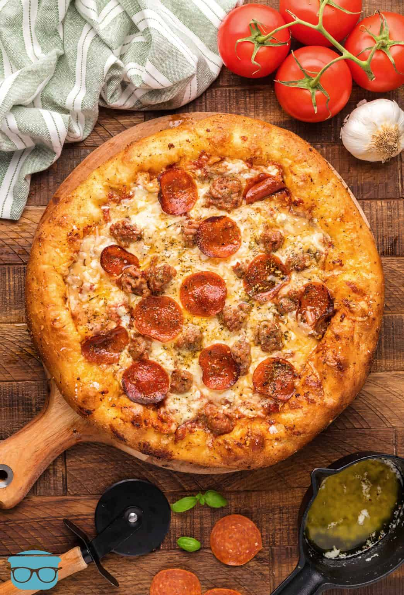

Pepperoni Pizza

A Delicious "Impaled through the Heart" Pizza Recipe
Grilling and smoking are two of my favorite things to do when spring and summer hits. Pizza is one of my favorite meals of all time so I thought why not try to smoke a pizza? It is a great recipe to make when you really want to switch up your pizza routine. The flavor alone will impale you through the heart! So if you want to branch out on your usual smoker recipes, and switch up your pizza routine, then you need to try my Smoked Pepperoni Pizza recipe.
Ingredients
- pizza dough - You can used store-bought here but I certainly used my own special homemade dough!
- olive oil - vegetable oil can be used as well
- onion powder - just a little.. ya know... to check
- garlic powder - ...or was it this one used for em'.
- dried minced garlic - you can skip this if you don't have it.. it just makes you extra certain about any "guests"
- italian seasoning
- ground italian sausage - this can be mild, but you should make it extra spicy!
- marinara sauce - my favorite store bought is Prego, but you could make it an especially special homemade sauce!
- mozzarella cheese - freshly shredded
- romano, parmesan, and asiago cheeses - if you are feeling extra cheesy!
- pepperoni slices - duh
- salted butter
- minced garlic - I'm just saying! You can never be too careful!
How To Make A Smoked Pepperoni Pizza:
- Preheat the smoker to 450F degrees with the pizza stone inside for 30 minutes
- At the 30 minute mark, prepare Italian sausage
- Heat a cast iron skillet over high heat
- Add the sausage and brown on both sides (about 1 min each), after break apart the sausage and brown, drain and set aside in warmer
- Place a sheet of parchment paper over a wooden cutting board
- Lightly flour the parchment paper and place the dough in the center
- Add a second sheet of parchment paper over the top of the dough and then roll out to 14 inches
- Combine seasonings in a small bowl or ramekin
- Brush the pizza dough with olive oil then sprinkle with half of the seasoning
- Spread marinara over the center of the dough. Stop 1” from the edge
- Add the sausage and pepperoni to the pizza. *Set aside about ¼ cup of sausage and pepperoni to add atop the cheese*
- Grate the cheese into a bowl & then evenly cover the pizza with the cheese
- Add remaining Sausage and pepperoni over the cheese
- Sprinkle remaining seasoning over the top
- Slide pizza with parchment paper onto the pizza stone
- Smoke for 15 minutes, rotate the pizza halfway through to ensure it cooks evenly
- Add butter and minced garlic to a cast iron sauce pan and place into the smoker
- Remove the parchment paper from under the pizza
- Smoke for several more minutes or until the crust is at desired crispiness
- Remove pizza and butter from the smoker
- Finally, brush the crust with the melted butter & let it cool five minutes, then slice and serve~!
Homepage